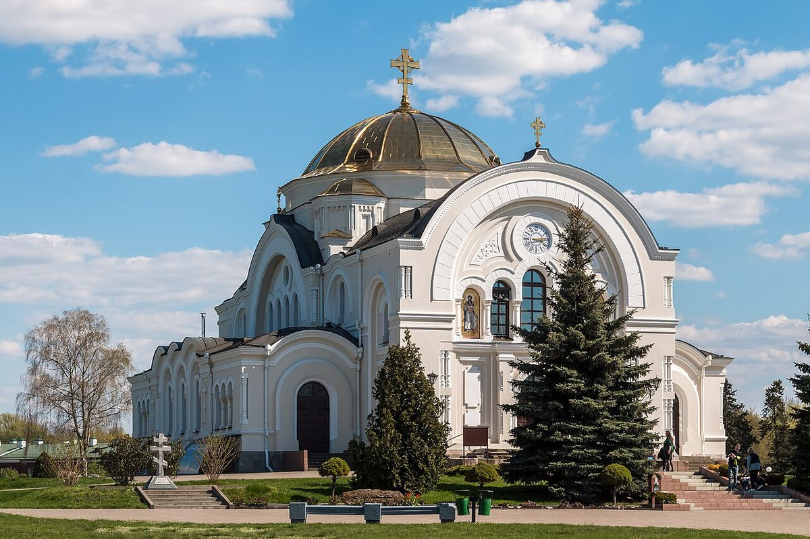
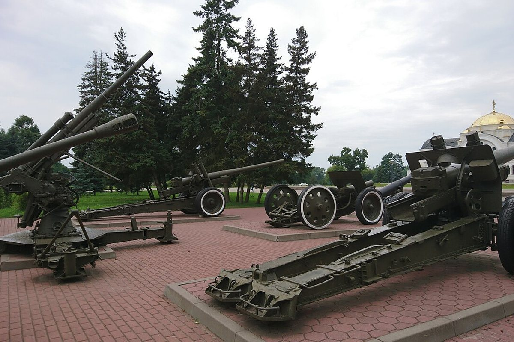
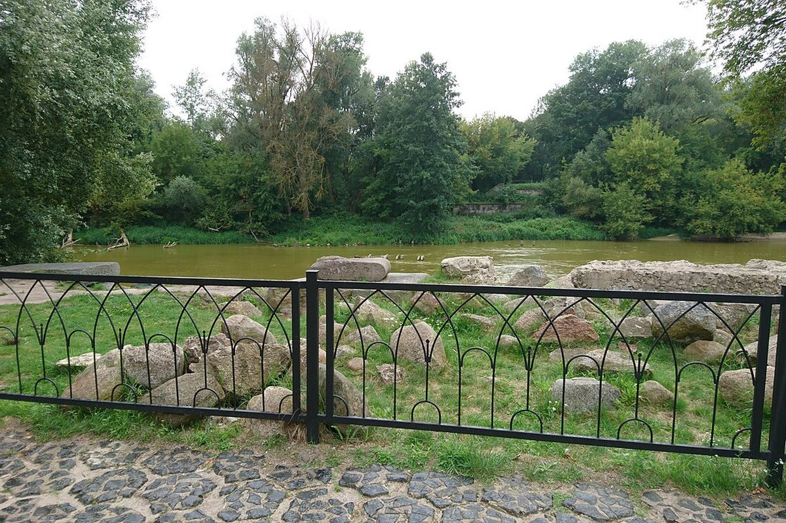

Крэпасць XIX стагоддзя, якая стала адным з самых устойлівых асяродкаў супраціву ў чэрвені 1941 года. З 1965 года — «Крэпасць-герой».
Брэсцкая крэпасць пабудавана ў 1830–1842 гадах як крэпасць I класа на заходняй мяжы Расійскай імперыі. Яна складаецца з чатырох умацаванняў — Цытадэлі, Кобрынскага, Валынскага і Тэрэспальскага.
У чэрвені 1941 года крэпасць стала адным з самых устойлівых асяродкаў супраціву. Гарнізон у акружэнні адчуваў недахоп боепрыпасаў, медыкаментаў, прадуктаў і вады; апошнія асяродкі супраціву трымаліся да 20-х дзён ліпеня.
8 мая 1965 года крэпасці прысвоена званне «Крэпасць-герой». Мемарыяльны комплекс адкрыты 25 верасня 1971 года; яго плошча — каля 70 га.
Сёння тут аб’яднаны руіны і захаваныя збудаванні, скульптурныя кампазіцыі і музейныя экспазіцыі: Музей абароны, «Музей вайны — тэрыторыя міру», «Летапіс Брэсцкай крэпасці», «Абарона Усходняга форта» і філіял «Музей 5 форт».


